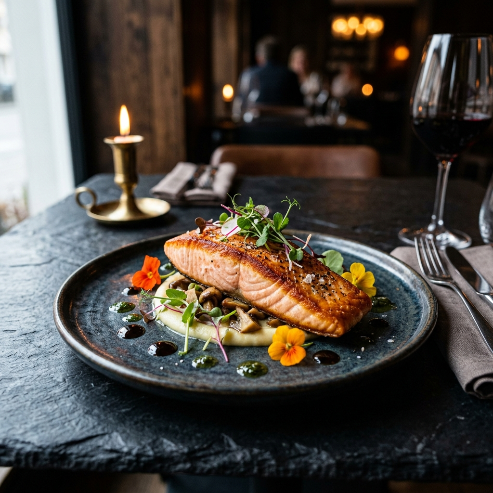
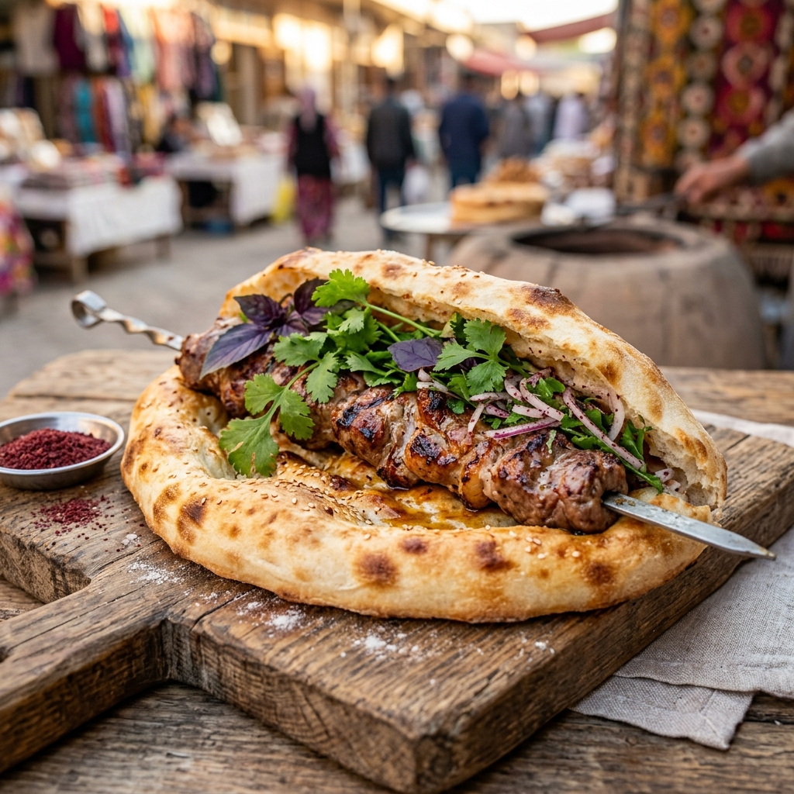
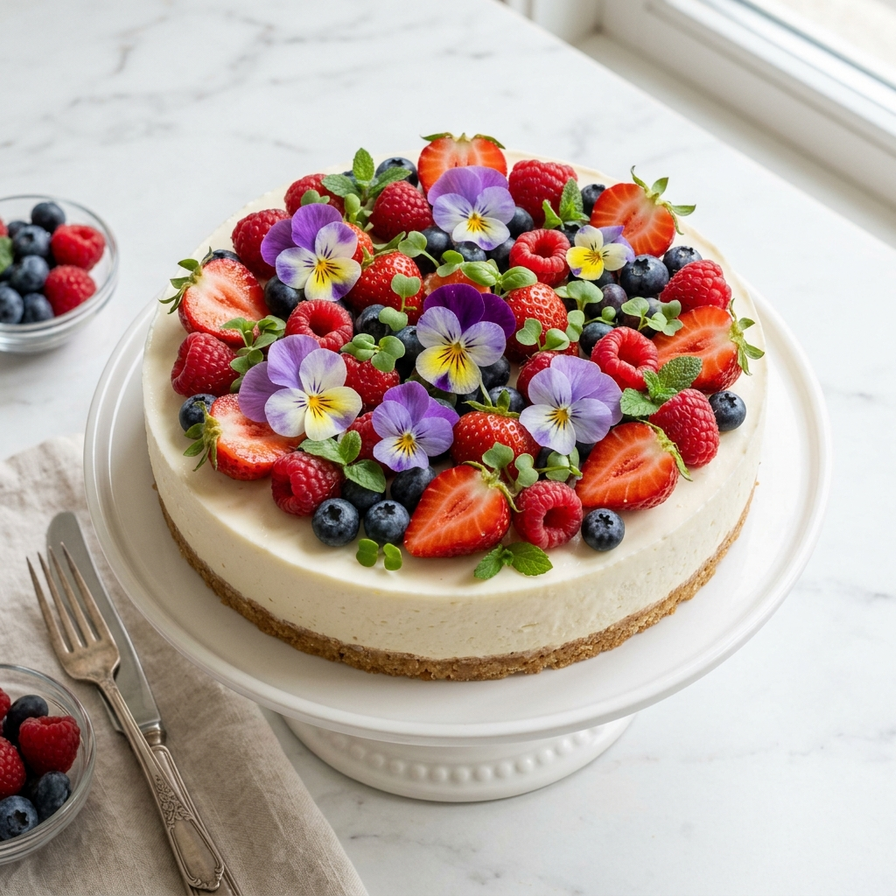

№1
Июль 2026
Ташкент · Самарканд
Сладкое + острое:
новая эра вкуса
Hot Honey покорил мир — мы покажем, как повторить дома и в ресторане
Ресторан
·
Стрит-фуд
·
Рецепты
·
Tech
·
ЗОЖ
© Fresh Weekly Uzbekistan
freshweekly.uz
@fresh_weekly_uz

Ресторан недели
Лосось с соусом понзу · Фото: ORA
ORA
Победитель Ultima Guide 2026 · Истикбол, 41, Ташкент · Средний чек: 250,000 сум
«Красивая тарелка — это бесплатная реклама в Instagram. Подача теперь равно маркетинг.»
— Шеф-повар ORA
— Ваше фирменное блюдо?
«Лосось с соусом понзу. Мы подаём его с микрозеленью дайкона и лепестками настурции. Перечный вкус настурции идеально дополняет цитрусовый понзу.»
— Совет для домашней кухни?
«Купите тёмные тарелки. Любая еда на тёмном фоне выглядит как из ресторана. Это самый простой лайфхак.»
Что заказать
Лосось с понзу · Медальоны телятины · Тост с пармезан-эспумой
Наш рейтинг
Кухня ★★★★★
Подача ★★★★★
Цена / качество ★★★★☆
3

Стрит-фуд мира · 1 / 52
Нон-кабоб
Почему весь мир завидует Узбекистану
Свежая лепёшка из тандыра, внутри — сочный шашлык прямо со шпажки. Сверху — кинза, фиолетовый базилик, маринованный лук. Жир от мяса впитывается в горячий нон. Лучший — на Сиабском базаре в Самарканде. Цена: 15,000–25,000 сум ($1.20–$2.00) — одна из лучших уличных сделок в мире.
Мировой контекст
Тренд 2025 — «Street Food Couture»: уличная еда с ресторанным качеством. Корейцы добавляют трюфельное масло в ттокпокки. Мексиканцы делают тако из вагю. А наш нон-кабоб уже гурманский — нужно просто рассказать об этом миру.
Повторить дома · 15 минут
1. Купите 2 лепёшки и готовый шашлык на базаре.
2. Разрежьте нон пополам.
3. Положите шашлык + маринованный лук + зелень + сумак.
4. В фольгу, духовка 180°C на 5 мин. Хрустящий нон + горячее мясо = счастье.
4

Рецепт недели
Чизкейк
«Цветочный сад»
Без выпечки · 20 мин + 4 часа холодильник · Главный тренд кондитерской Ташкента
Версия шефа
Крем-чиз Filadelfia 400г
Греческий йогурт 200г
Желатин + цедра лайма
Декор: микрозелень базилика + виола + роза
Маржа в меню: 78%
Версия для дома
Творожный сыр 400г
Обычный йогурт 200г
Желатин + лимон
Декор: клубника + мята + ягоды
Бюджет: 45,000 сум
Шаг 1 · Основа
200г печенья в крошку + 80г масла. Утрамбовать в форму. Морозилка 15 мин.
Шаг 2 · Крем
Замочить желатин. Взбить крем-чиз + йогурт + пудра + цедра. Холодильник 4ч.
Шаг 3 · Магия!
Ягоды по кругу → микрозелень → цветы виолы. Только перед подачей!
5

Вкусовая лаборатория · 1 / 12
Сладкое + Острое
= Hot Honey
Мёд + хлопья чили = «Hot Honey». Самый вирусный соус 2024–2025. Начался в Нью-Йорке на пицце, захватил мир. Капсаицин активирует болевые рецепторы → мозг выбрасывает эндорфины → сладость мёда «гасит» боль → «двойной кайф».
Сочетать с
Крылышки · Пицца Маргарита · Жареный халуми · Мороженое · Шашлык из курицы
Не сочетается
Рыба · Плов · Супы · Молочные десерты · Хлеб
Сделай сам · 2 минуты
3 ст.л. мёда + 1 ч.л. хлопьев чили + щепотка соли + 1 ч.л. яблочного уксуса. Перемешать. Полить на крылышки или пиццу. Хранить при комнатной температуре.
6
Нутрициолог
Витамин С:
вы получаете
его неправильно
Факт недели
В болгарском перце витамина С в 3 раза больше, чем в лимоне. А в микрозелени редиса — в 40 раз больше, чем во взрослой редиске.
ТОП-5 источников витамина С
| # |
Продукт |
на 100г |
vs лимон |
| 1 | Шиповник | 650 мг | ×13 |
| 2 | Болг. перец | 183 мг | ×3.6 |
| 3 | Киви | 92 мг | ×1.8 |
| 4 | Брокколи | 89 мг | ×1.7 |
| 5 | Лимон 🍋 | 53 мг | ×1 |
«Не пейте горячий чай с лимоном ради витамина С — он разрушается при 70°C. Один болгарский перец = суточная норма.»
— Колонка диетолога, совет недели
Лайфхак для хозяйки
Нарежьте перец соломкой утром → контейнер → холодильник. Грызите как снэк весь день. Вкуснее чипсов и в 100 раз полезнее. Дети тоже будут есть, если макать в хумус.
7
Tech
Технологии, которые
меняют еду и здоровье
🌍
Стартап мира
Zoe · Великобритания
Персонализированное питание на основе анализа крови. Вы сдаёте тест → AI анализирует реакцию вашего организма → индивидуальные рекомендации. Привлекли $117 млн. Будущее диетологии.
🇺🇿
Стартап Узбекистана
Zira.uz
Кулинарная платформа. 5,000+ рецептов узбекской и мировой кухни с пошаговыми фото. Доставка продуктов из рецепта одним кликом. FoodTech в Узбекистане работает.
⌚
Гаджет
Xiaomi Mi Band 9
Лучший фитнес-трекер до $40. Шаги, пульс, сон, калории. Водонепроницаемый. Батарея: 16 дней. Идеально для старта ЗОЖ без затрат. Есть в любом Uzum.
🤖
AI-лайфхак недели
Напишите ChatGPT: «У меня в холодильнике: курица, помидоры, лук, рис. Предложи 3 блюда за 20 минут». AI выдаст рецепты с тем, что у вас есть. Больше никаких «что приготовить?».
8
Спорт & Фитнес
Утренняя зарядка:
10 минут, которые
меняют день
Не нужен зал. Не нужна форма. Просто встаньте на 10 минут раньше. Исследования показывают: 10 минут утренней активности улучшают концентрацию на 48% в течение дня.
| Упражнение |
Объём |
Время |
| Приседания | 20 раз | 1 мин |
| Отжимания | 15 раз | 1 мин |
| Планка | 30 сек | 0.5 мин |
| Выпады | 10+10 | 1.5 мин |
| Пресс | 20 раз | 1 мин |
| Бёрпи | 10 раз | 1.5 мин |
| Прыжки на месте | 30 сек | 0.5 мин |
| Растяжка | — | 3 мин |
Фитнес-клуб недели
Discover Fitness
Ташкент, Tashkent City · от 800,000 сум/мес
Бассейн, SPA, групповые, тренер — один из самых оснащённых клубов в Центральной Азии
Связка тренировка + питание
После зарядки — стакан воды с лимоном + завтрак через 30 мин: овсянка + банан + орехи. Энергия на 4–5 часов без «провала» к обеду.
9
Коллекционная карточка · 1 / 52
Серия «Продукты мира»
🌿
КИНЗА
Coriandrum sativum · Центральная Азия
Витамины: A, C, K, E
Вкус: Яркий, цитрусовый
Сезон: Круглый год
Хранить: +4°C, 5–7 дней
Факт: В микрозелени кинзы в 5 раз больше витамина С, чем во взрослой кинзе. В Узбекистане кинза используется в 85 из 100 ресторанов.
✂️ ВЫРЕЖИ И СОХРАНИ · FRESH WEEKLY №1 · 1/52
✨ Дополненная реальность
Наведи камеру телефона на карточку, чтобы увидеть 3D-анимацию прямо на бумаге!
📸 Запустить AR-сканер
📸 Фото наших читателей
Приготовили блюдо по нашему рецепту?
Пришлите фото в Telegram @fresh_weekly_uz
Лучшие — здесь, с вашим именем.
11
В следующем выпуске
Выпуск №2
Ресторан
PLATAN — лучший ресторан Самарканда
Стрит-фуд
🇰🇷 Ттокпокки — корейская волна
Вкусы
Солёное + Сладкое: мисо-карамель
Нутрициолог
Белок: сколько граммов вам нужно?
Печатная версия
Премиум-печать на плотной бумаге, 12 страниц, формат A5.
15,000 сум / выпуск · 50,000 сум / мес (4 выпуска)
FRESH WEEKLY
Telegram: @fresh_weekly_uz
Instagram: @fresh_weekly_uz
Сайт: freshweekly.uz
📍 Ташкент · Самарканд
Fresh Weekly №1 · Июль 2026 · Ташкент & Самарканд
freshweekly.uz
12